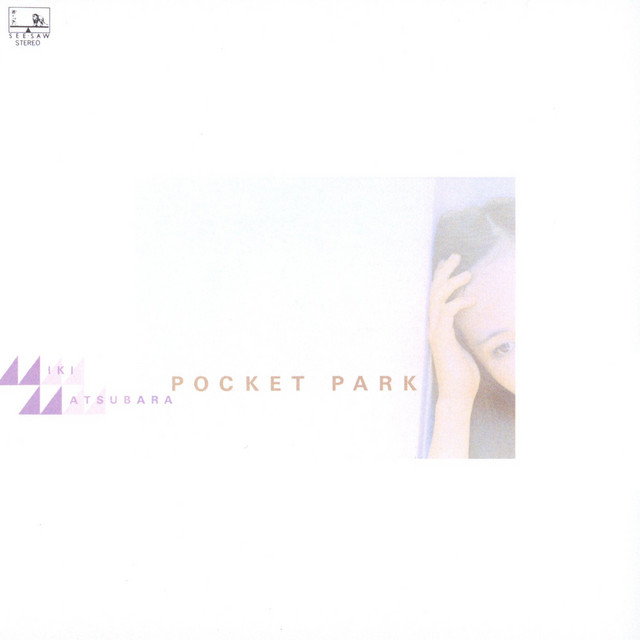
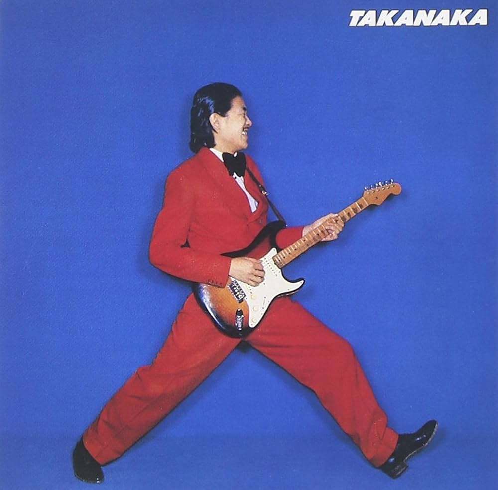

Pocket Park
Miki Matsubara
1980
Take a look into the music and culture behind Japanese City Pop

City Pop is a genre of Japanese popular music that developed during the late 1970s and became especially popular throughout the 1980s. It blends elements of pop, jazz, funk, R&B, and other musical styles into a smooth and polished sound. The genre became closely associated with Japan's growing cities, capturing the feeling of modern life, nightlife, travel, and the optimism of the era. Many City Pop songs feature catchy melodies, layered instrumentation, and a strong emphasis on atmosphere. Although City Pop's original popularity eventually faded, its music found a new audience decades later through the internet. Songs and albums began spreading through YouTube, streaming services, and online communities, introducing listeners around the world to artists from the genre's original era. Today, City Pop remains an influential part of Japanese music history while continuing to find new listeners outside of Japan.

Miki Matsubara
1980

Anri
1983

Masayoshi Takanaka
1980